A complete loop of Portugal. Lisbon's old quarters and Belém, the medieval walls of Óbidos, the abbey at Alcobaça, the fishing town of Nazaré and the shrine of Fátima, the Templar castle at Tomar, Roman Conímbriga and the university of Coimbra, two nights in Porto for the Douro and its port cellars, Guimarães where Portugal began, the Jewish heritage of Belmonte and Castelo de Vide, Roman Évora, and the Algarve's Sagres and Lagos before returning to Lisbon. We corrected one detail of the original: the Aveleda winery is near Penafiel, not Vila Real; in Vila Real we visit the Mateus Palace. Days 3 and 7 have about 4 to 5 hours of driving with many stops; a private driver lets you set the pace.
See it for yourself
Photos from the journey

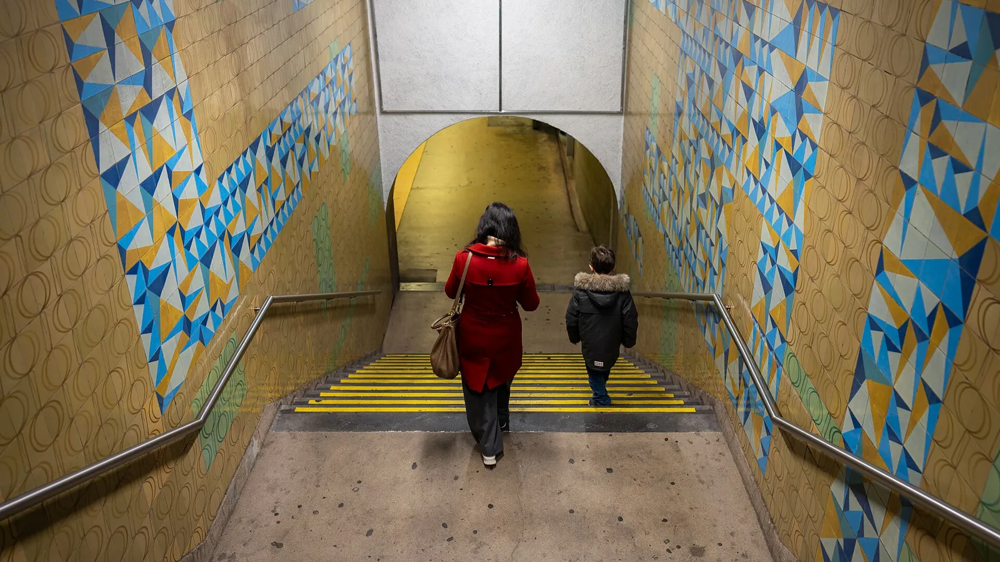
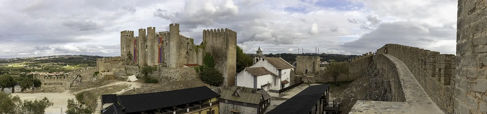
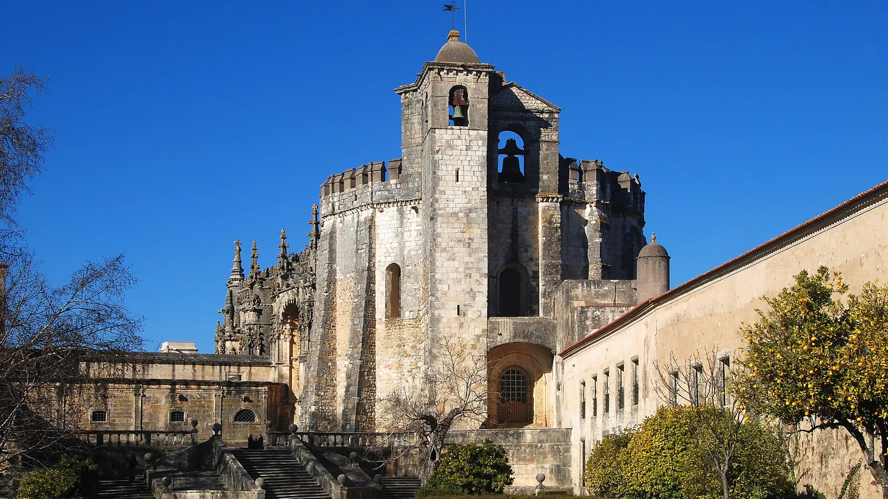
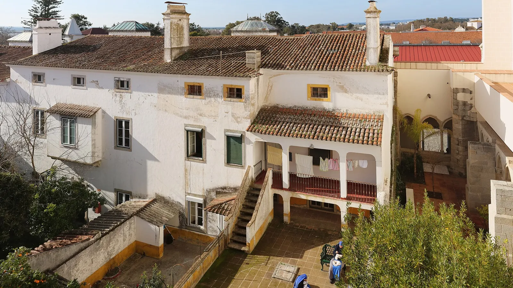
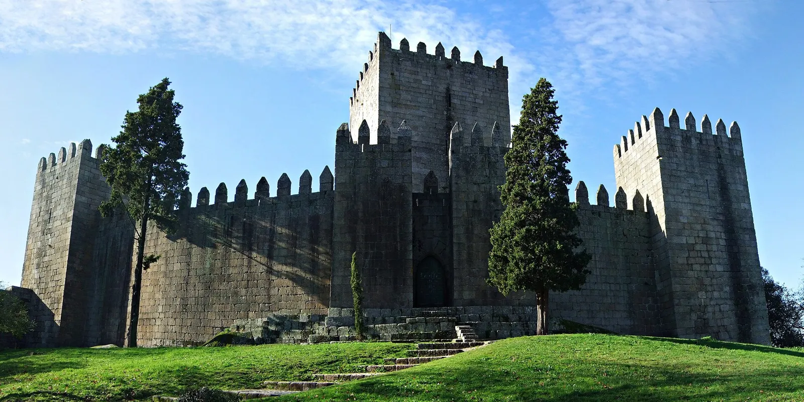
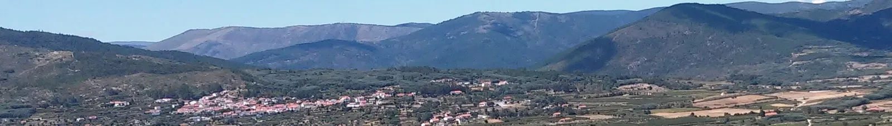
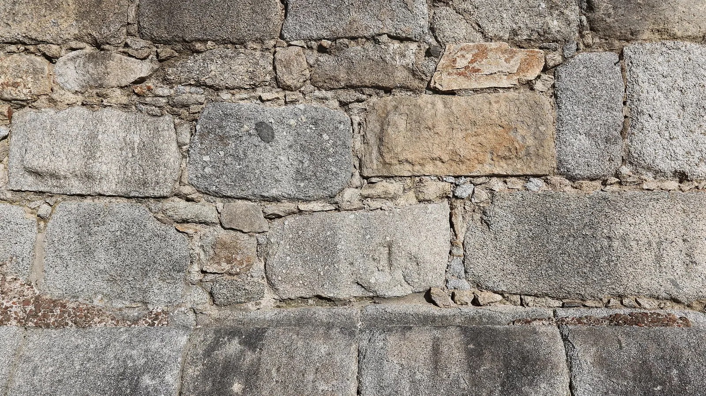
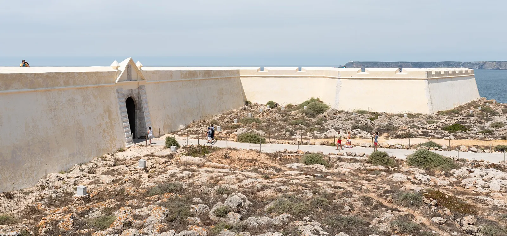
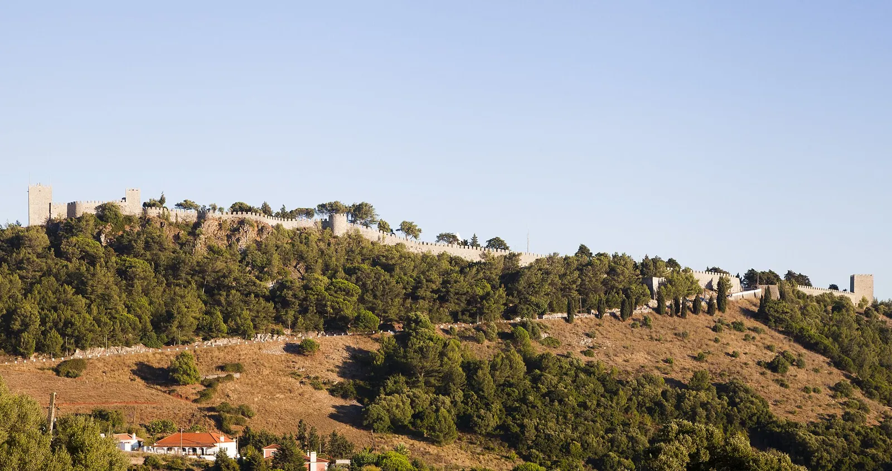
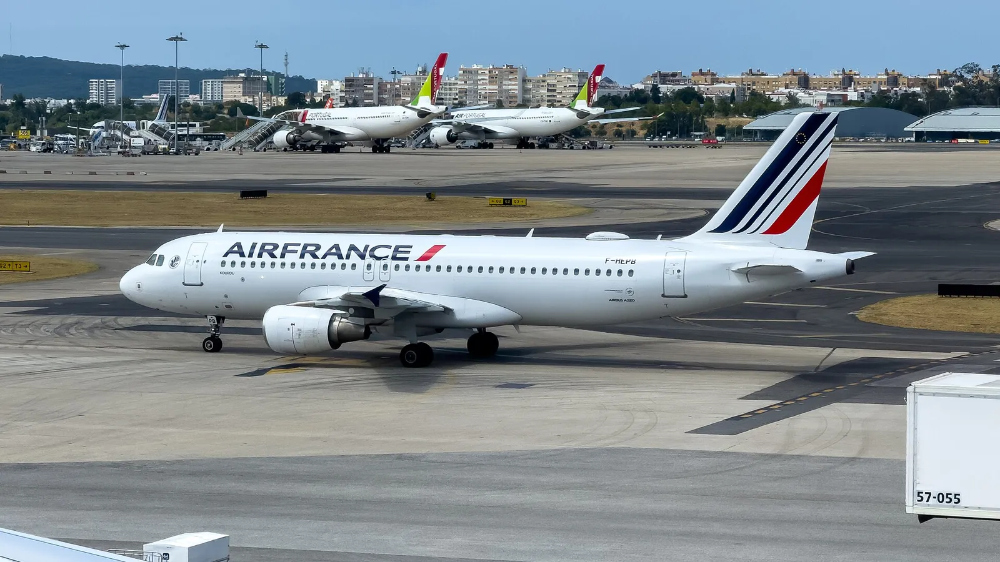
Where you go
The journey on one map
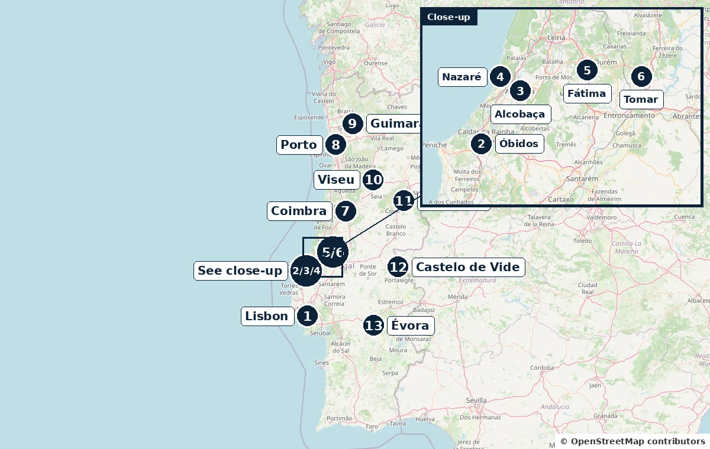
LisbonÓbidosAlcobaçaNazaréFátimaTomarCoimbraPortoGuimarãesVila RealViseuBelmonteCastelo de VideÉvoraSagresLagosLisbon
Day by day, in short
Daily travel brief
Distances are by road for the whole day. The full plan with timings comes with your detailed itinerary.
-
1
Arrive in Lisbon
- Lisbon is hilly and its pavements are polished limestone: wear shoes with grip.
-
2
Lisbon: Baixa, Alfama and Belém
Belém Tower Jerónimos Monastery
- Belém Tower and the Jerónimos Monastery: the monastery is closed on Mondays.
- Option: swap the afternoon for Sintra's Pena Palace (about 40 minutes away; timed tickets).
-
3
Óbidos, Alcobaça, Nazaré and Fátima to Tomar
Alcobaça Monastery Nazaré Sanctuary of Fátima
- Sanctuary of Fátima: fátima is a place of pilgrimage.
- A long day; the driver keeps stops flexible.
-
4
Tomar, Conímbriga and Coimbra to Porto
Conímbriga University of Coimbra
- Coimbra University: library visits are by timed ticket.
- Option: the Buçaco forest and palace on the way north.
-
5
Porto and the Douro
Palácio da Bolsa Vila Nova de Gaia
- Option: a full-day Douro Valley trip by train or boat.
-
6
Guimarães and Vila Real to Viseu
- Viseu's old town and cathedral make a good evening walk.
-
7
Belmonte and Castelo de Vide to Évora
- The longest drive of the trip; the driver stops every 1 hour 30 minutes.
-
8
Évora, then south to the Algarve
- The chapel can upset children and sensitive visitors; it is optional.
- Alentejo summers are very hot; carry water.
-
9
Sagres, Cape St Vincent and Lagos
- Cape St Vincent: strong winds at the cliff edge.
- Use high-factor sunscreen; the Algarve sun is strong even in spring.
-
10
-
11
Fly home from Lisbon
- Transfer to Lisbon Airport: be at the airport 3 hours before an international flight.
- Ask for a tax-free form when you shop; claim it at the airport.
Local know-how
Travel hacks from our desk
Hotel deposit
Use a credit card for the deposit or pre-authorisation at check-in, never a forex or debit card. Forex cards cannot hold funds, many hotels refuse them, and a credit-card hold is released faster.
Cards and cash
On card machines, always choose to pay in euros, never in INR. Cards work almost everywhere. Carry about EUR 50 in cash for small cafés, toilets and markets.
Pickpockets
Busy stations, trams and squares are pickpocket hotspots. Keep passports in the hotel safe, carry a copy, and wear your bag in front in crowds.
Plugs, water and meal times
Plugs are the two round-pin type C and F at 230 volts (Switzerland uses type J; a type C plug fits). Tap water is safe to drink. Lunch is about 12:00 to 14:00 and dinner from about 18:30.
When to go
Best time to visit for this journey
May or late September.
April to June and September to October. July and August are very hot inland (Évora often passes 35°C).
The package
What's included
Included
- 10 nights with breakfast
- Private car with English-speaking driver throughout
- Guided tour of Lisbon
- Fado evening
- 24/7 support from Blue Diamond Voyage
Not included
- International flights
- Schengen visa
- Entry fees and tastings
- Lunches and dinners
- Travel insurance
- City taxes
The detailed itinerary
Some journeys are planned. Ours are crafted.
The full 11-day plan is ready: hour-by-hour timings, drive times, temple dress codes, food for your diet and a route map for every day. Tell us your dates and your city, and we'll send it to you on WhatsApp, shaped around you.
- Hour-by-hour timings
- A route map for every day
- Hotel and room details
- Visa and entry steps
- Vegetarian and Jain dining
24/7 travel desk+91 97148 59797+91 98242 21400
Photo and map credits
- Lisbon Airport: Photograph by Mike Peel (www.mikepeel.net)., CC BY-SA 4.0, via Wikimedia Commons
- Avenida da Liberdade: Jules Verne Times Two, CC BY-SA 4.0, via Wikimedia Commons
- Óbidos: Diego Delso, CC BY-SA 4.0, via Wikimedia Commons
- Convent of Christ: Alvesgaspar, CC BY-SA 3.0, via Wikimedia Commons
- Igreja de São Francisco: Ingo Mehling, CC BY-SA 4.0, via Wikimedia Commons
- Guimarães Castle: Filipe Fortes from New York, United States, CC BY-SA 2.0, via Wikimedia Commons
- Belmonte: By User:Gato Preto - Own work, CC BY-SA 4.0, CC BY-SA 4.0, via Wikimedia Commons
- Templo Romano de Évora: Ingo Mehling, CC BY-SA 4.0, via Wikimedia Commons
- Sagres Fortress: Norbert Nagel, CC BY-SA 4.0, via Wikimedia Commons
- Sesimbra Castle: Diego Delso, CC BY-SA 3.0, via Wikimedia Commons
- Lisbon Airport: Photograph by Mike Peel (www.mikepeel.net)., CC BY-SA 4.0, via Wikimedia Commons
- Maps: © OpenStreetMap contributors; road routes by OSRM.